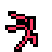
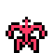
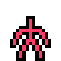

-
I created this character on a whim, when I was experimenting with creating a walk cycle that felt 3D by using points then connecting them for limbs. I found the lanky
little thing adorable, and came up with a game concept around it - Nervy, and the Quest for Serotonin!
It would be an auto-platformer, where you're observing this little nerve through a microscope or a tank window, and can drag eyedroppers or pipes around that create puddles
of various biological hormones, each triggering a different behaviour in Nervy. Adrenaline would make it run faster, and Cortisol would make it jump in fright, for example.
The aim would be to get to a serotonin puddle at the end of the level while avoiding any hazards along the way, where you can see Nervy sit down and finally relax.